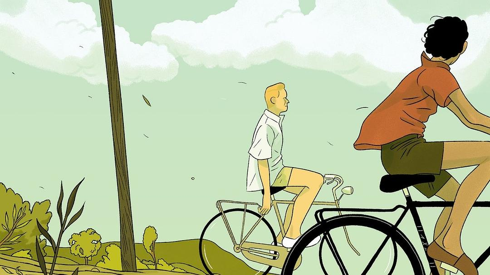
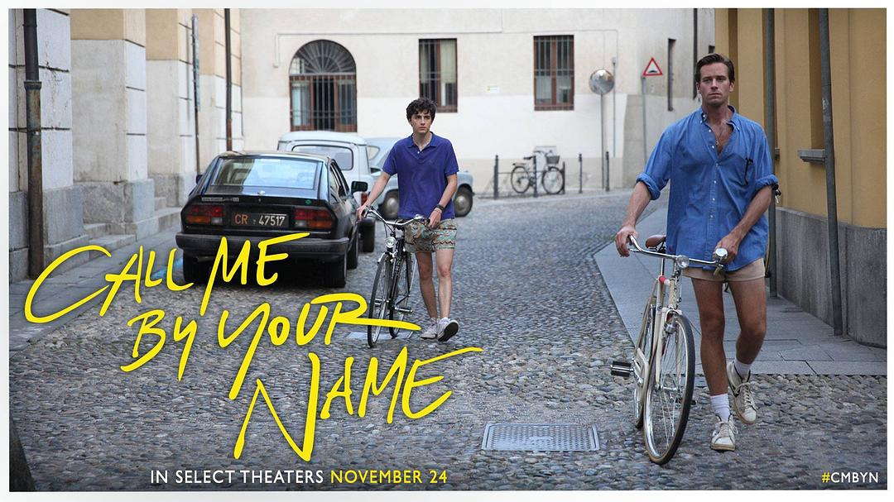
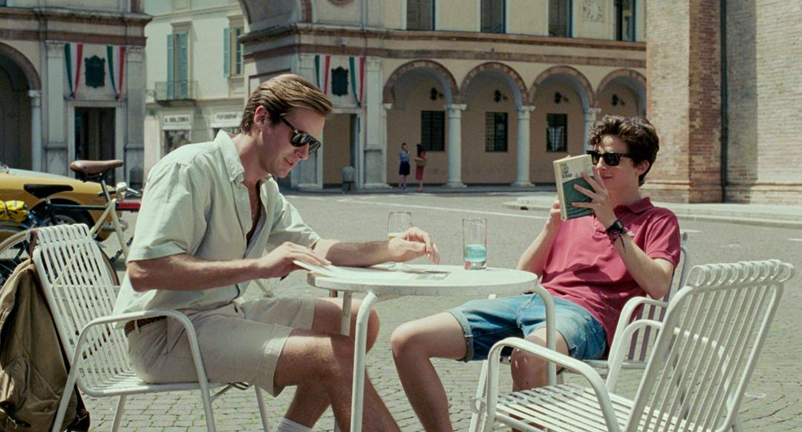
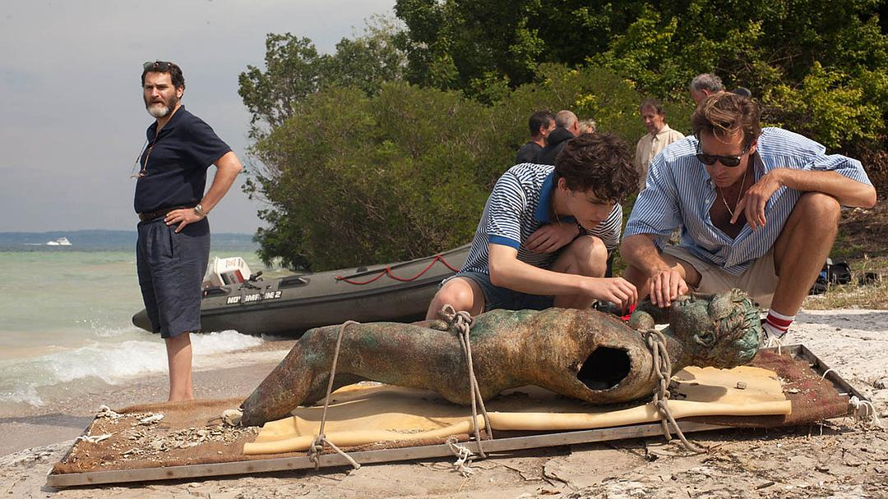

作者André Aciman认为人类美学的第一产物是古典音乐，所以他借用音乐术语Tempo(速度还原), Cadenza(华彩乐段), Capriccio(随想曲) 以及Da Capo(从头开始)来命名小说续作Find Me(请来找我)的四个章节；分别讲述父亲Sami，Elio, Oliver, 以及Elio和Oliver。已经离婚的父亲Sami乘坐火车从弗洛伦萨去往罗马看望Elio，途中偶遇27岁的女摄影师Miranda。“她的爱如干柴烈火，漫无边际，”父亲回忆道。这时同样27岁的Elio已是一名古典钢琴演奏家。他与比他年龄大一倍的男士Michael交往，同时还牵挂着Oliver。虽然此时的Oliver已经有了妻儿，但他却同样渴望Elio，并不时的幻想着三人行。在第四章小说的结尾，Elio和Oliver再次相聚，他们一起追思父亲Sami，并大胆的设想如果当初没有分开，生活会是如何。 
读原著的时候读得最入迷的部分，就是Elio的敏感和幻想，他的欣喜，悲伤，愤怒，是我在看小说时最深的情感投入，也是我最担心电影能否改编成功的关键。毕竟原书中有占到三分之一的心理描写。然而电影用细腻柔和的叙事，恬静轻快的配乐，还有无懈可击的表演成功地完成了这一切。故事十分简单，然而在Timothée真挚且动人的表演中，我觉得他就是从书里走出来的那个为了爱情在夏天时而欢喜，时而悲伤的Elio。他的每个小笑容，小动作，每一个动容的吻，每一滴震颤的泪，都是Elio。Timothée的演技让我深深想到了《卡罗尔》里的Rooney Mara，是他成就了这部电影。配上Sufjan Stevens那温婉轻诉的音乐，我仿佛融化在了电影的情境里。在那个一去不复返的夏天，我们和Elio一起在窗前迎接每年新的房客。只是这一年的这一位叫Oliver的年轻学者悄悄地夺走了我们的心。他打球的姿态，他的那一句悠扬的Laterrr，他骑着自行车像风一样的背影，他的自信与脆弱，你和我都看在眼里。我们和Elio一样，爱上了我们曾经的爱情。

Elio的暗恋如山呼海啸，在平静的夏日波涛暗涌。Oliver的简单的一个语气、一个表情，就足以让他前一刻如入云端，后一刻如坠深渊。书中的Elio睿智而敏感，不断诘问自己，因为Oliver而神魂颠倒，乃至失落悲伤。电影里的Elio显然更主动勇敢，他敢于直面自己的感受，从心所向，撩拨着Oliver的心绪，以至于让电影版的Oliver更显懦弱。可当电影里Elio在蜜桃事件时哭泣，坠入Oliver的臂弯，这个叫Timothée的男孩又再一次让我相信他仍是那个敏感伤怀的Elio，他爱上自己的爱情，心绪不宁，就像每一个在爱情里患得患失的我们。和原书有不一样的结尾，电影把书里第四章，十数年后Elio再次见到Oliver的情节删掉，只让我们看到Elio和Oliver的那番通话。刚开始我有点失落，因为书里的第四章可是我最爱的段落。六周的短暂邂逅让人记一辈子，这是原书给我最大的震撼。可是当电影里Elio在电话这头不断喊着自己的名字来称呼Oliver，就像他们曾经做过的那样，Oliver在电话轻轻叹息，终于回应以自己的名字时，我突然被感动了。书里面Elio没有得到的回应，没有得到的爱情，电影里他得到了啊。那些遗憾，那些唏嘘，又能如何呢？我和Elio一样，在光明节的壁炉前泪流满面。

醒时同交欢，醉后各分散。书和电影我两者都爱，它们说的是同一个故事，却有着各自美丽的结局。书里Oliver拿走了Elio的明信片，十五年后两人第一次重逢，Oliver让他猜卡片背后写的二字，谁能想到是Cor Cordium，真心，和“雪莱之死”的答案一样。二十年后，Elio的父亲已经去世，两人再次相逢，无比唏嘘。只是Elio依然对Oliver心心念念，二十年无怨无悔，而且还要一辈子爱下去，他说：“你是我将死之时唯一想要说再见的人，因为只有这样，这个我称之为人生的东西，才有其意义。
而若我有一天听到你死去的消息，那我所知的我的生命，这个在你面前和你对话的我，也将不复存在。”是什么竟让六周的邂逅成了一辈子的刻骨铭心？一时的欢愉竟要以永生的力量来记忆？

书的结局是让人心痛的，痛得像Ennis找到了Jack和自己的衬衣，像何宝荣再一次问黎耀辉，不如我们重新来过。而电影的结局是泪中带笑的，它像Theresse和Carol的重逢，像月光下的男孩们，甚至超越了性向，像每一个普通却不平凡的爱情故事，不管最终它们是得到亦或者是失去。当Elio的父亲对他说“ I envy you” （我羡慕你）时，我深深感受到了他的情绪。爱情的欢愉转瞬即逝，爱情的悲伤却会持续一生。Elio的父亲用他的“自己论”，圈点出了这一场邂逅的意义：浮生若梦，我们终将葬送我们的青春，不管爱过的人是否离去，我们都该感谢，感谢那些曾经在生命里存在过的人。他们给我们带来的不只是爱情，不只是友谊，更多的是那一种绝无仅有的人生体验。它逐渐成了我们的一部分，烙印在我们的记忆里，纤毫毕现。 那一件衬衫一个吻，都永远地消失了，随着时间在记忆里苍白，像那永远失去的青春和初恋。可我和你一样，我什么都记得像雪莱在诗中说道：趁天空还明媚，蔚蓝
趁着花朵鲜艳
趁眼睛看来一切美好
趁夜幕还没降临
呵 趁现在时流还平静
做你的梦吧 且憩息
等醒来再哭泣